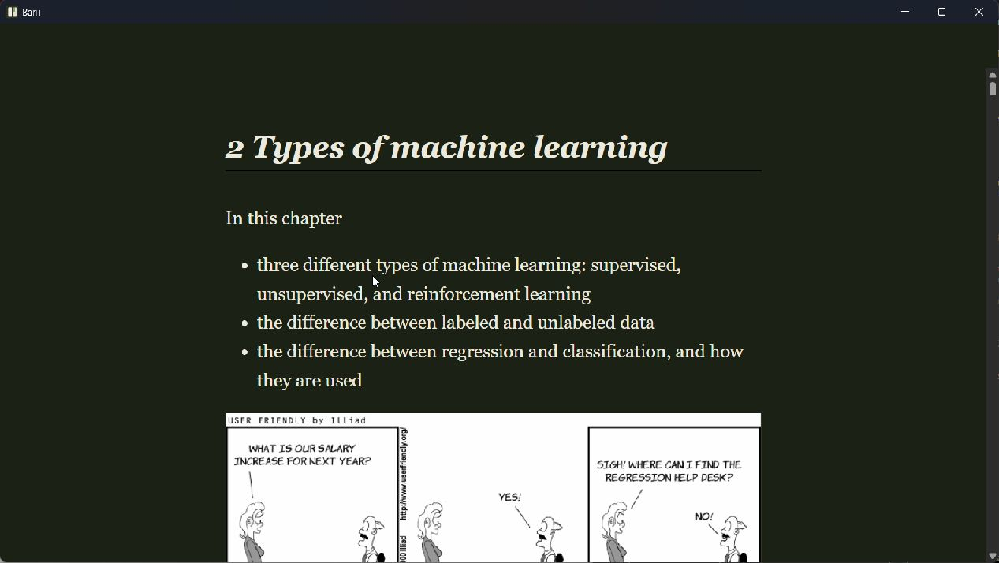

01
Read in bites
A focused mode reveals a small piece of text at a time. Switch to the book's original EPUB view whenever you prefer.
An offline-first EPUB and TXT reading workspace for Android and Linux. Move through books one small bite at a time, without losing your place.
Open source · Local-first · No account required

Designed around simple, offline-first workflows. These are the features in the project's published scope.
A focused mode reveals a small piece of text at a time. Switch to the book's original EPUB view whenever you prefer.
Notes, highlights, reading position and progress stay with your local library.
The core reading workflow works offline with books stored on your device.
Directional gestures make it easy to move between bites, notes, and dictionary workflows.
Adjust themes and typography to make longer sessions more comfortable.
Cross-platform Flutter application with local-first persistence.
Import EPUB or TXT content directly from your device.
Read bite by bite or keep the original EPUB structure.
Find your last position, notes and highlights, even offline.
Barii uses Flutter, Dart, Riverpod and a local SQLite database. Its architecture separates reader, library and notes features so the experience can grow without requiring accounts or a hosted service.
Early beta, built in the open. The current release is v0.2.0-beta.1. Android and Windows builds are available on GitHub Releases; source setup instructions are in the README.
Reader optimizations were measured on a physical Samsung SM-M145F running Android 15, using the same EPUB fixture and five recorded Flutter profile runs.
M2 median first-readable time, down from 8.43 seconds in the original M0 measurement.
M1 full-book pagination median 8.65 s vs M2 bounded initial-window pagination median 0.87 s. Different workloads; not a claim about all books.
Method and raw results: M0 baseline · M2 baseline · Optimization commit. Results are specific to the recorded device and fixture.
Browse the code, run a development build, or open an issue on GitHub.